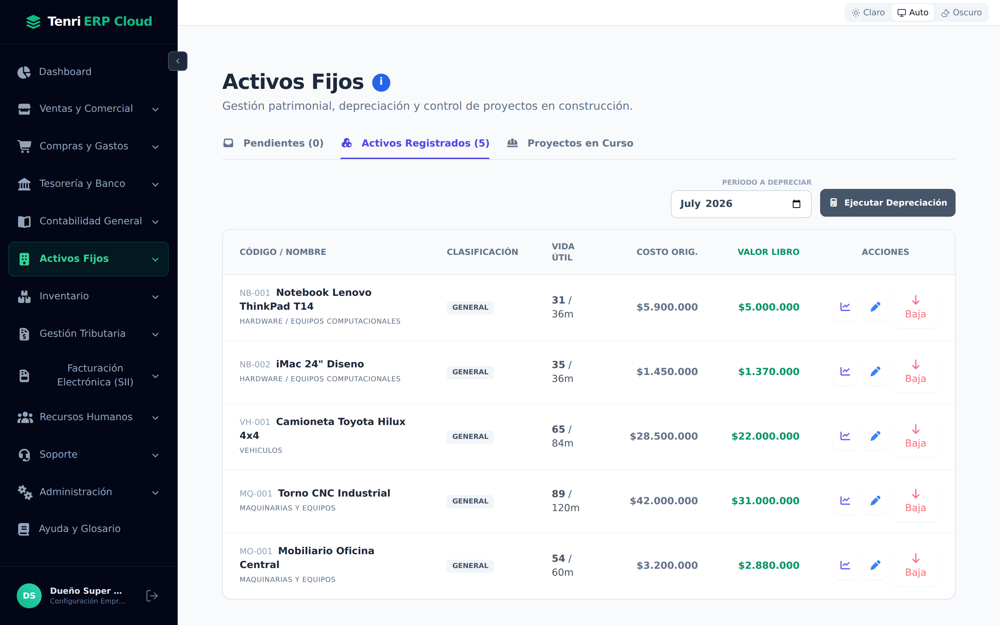
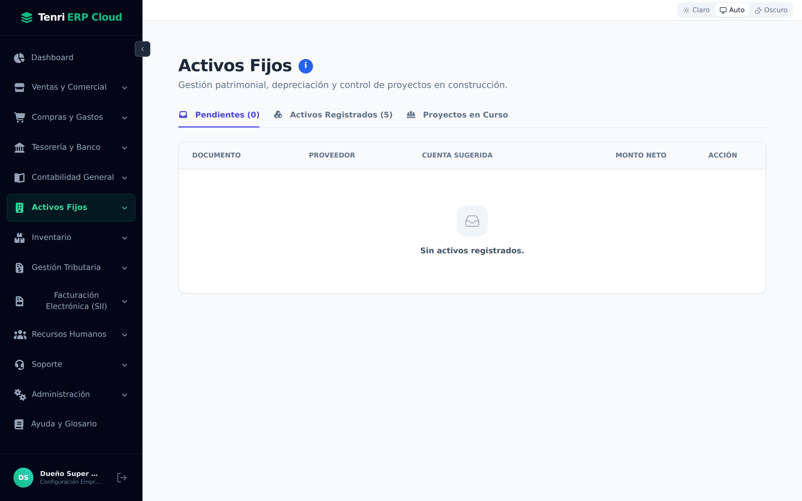
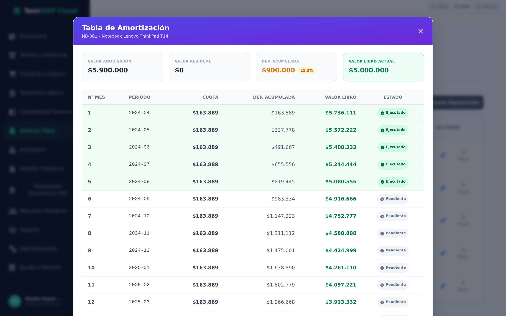
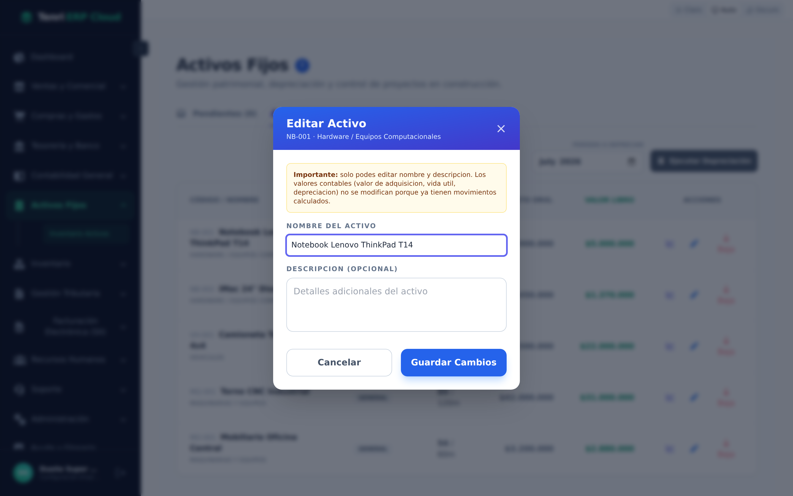
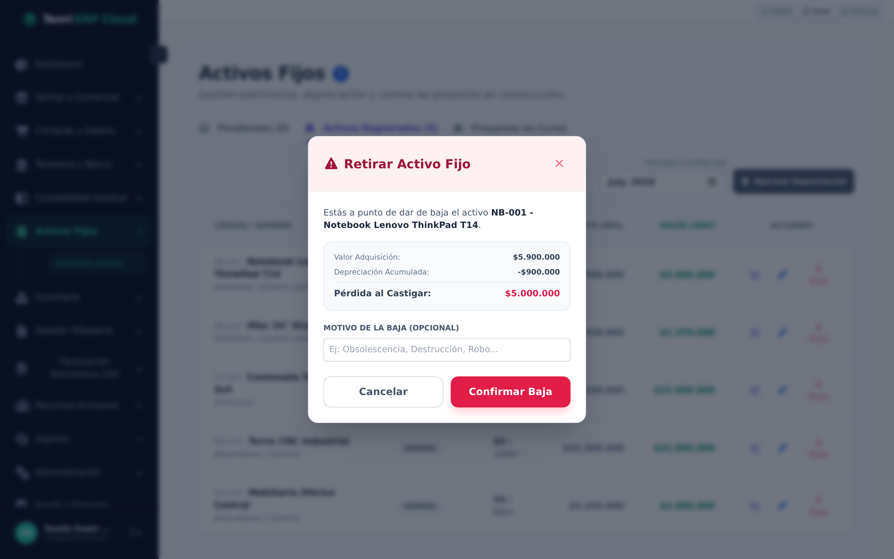
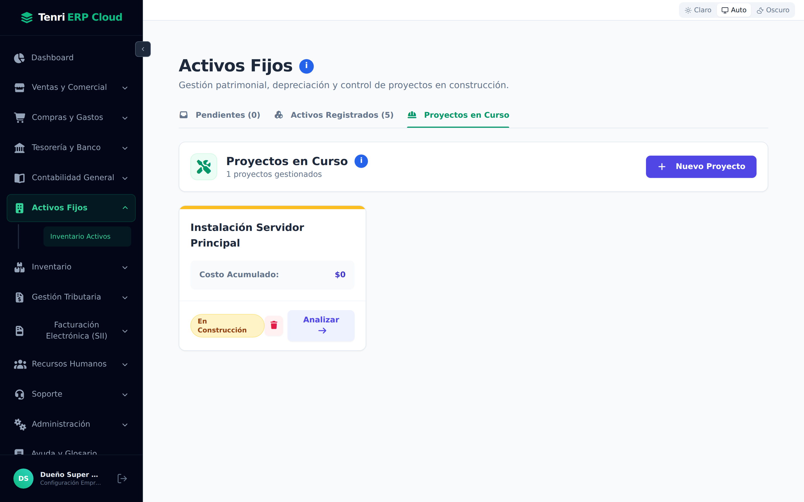
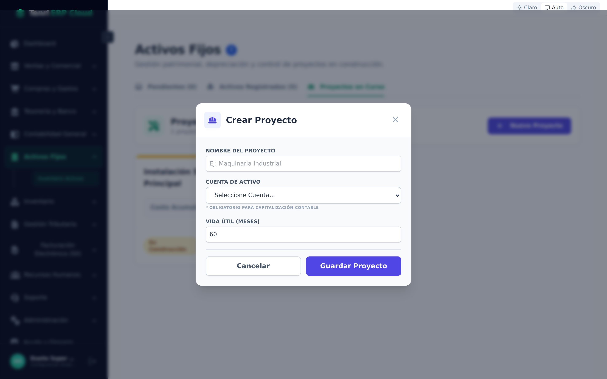

Registre su patrimonio, calcule la depreciación mes a mes, siga los proyectos en construcción y retire los bienes que ya no usa — todo con la contabilidad generada de forma automática.

Gestión patrimonial, depreciación y control de proyectos en construcción.
Un activo fijo es un bien de larga duración que su empresa usa para operar y no para revender: computadores, vehículos, maquinaria, mobiliario o edificios. Como se aprovechan durante varios años, su costo no se lleva a gasto de una sola vez, sino que se deprecia repartiéndolo a lo largo de su vida útil.
Abra Activos Fijos → Inventario Activos en la barra lateral. La pantalla se organiza en tres pestañas:

Cuatro términos que verá en todo el módulo.
Antes de operar, conviene tener claras las nociones que el sistema calcula por usted:
| Concepto | Qué significa |
|---|---|
| Valor de adquisición | El costo original del bien: lo que pagó por él (valor neto, sin IVA). Es la base sobre la que se calcula la depreciación. |
| Vida útil | Los meses durante los que el bien será útil para la empresa (p. ej. 36 meses un notebook, 84 una camioneta). Define el ritmo de la depreciación. |
| Depreciación acumulada | La suma del desgaste ya reconocido como gasto desde que se compró el bien hasta hoy. |
| Valor libro | El valor contable actual: valor de adquisición menos depreciación acumulada. Representa cuánto “vale” todavía el activo en su contabilidad. |
| Valor residual | El valor estimado del bien al final de su vida útil. La depreciación nunca baja del valor residual. |
El inventario patrimonial de su empresa.
Esta pestaña es el corazón del módulo. Cada fila es un bien y las columnas resumen su situación de un vistazo:
| Columna | Descripción |
|---|---|
| Código / Nombre | El código interno del activo (ej. NB-001) y su nombre. Debajo aparece la cuenta contable a la que pertenece. |
| Clasificación | La categoría del bien según su cuenta de activo (Hardware, Vehículos, Maquinarias…). |
| Vida útil | Muestra los meses restantes sobre el total (ej. 31 / 36m): cuánta vida le queda al bien. |
| Costo Orig. | El valor de adquisición del bien. |
| Valor Libro | El valor contable actual, resaltado en verde. |
| Acciones | Ver la tabla de amortización, editar el activo o darlo de baja. |
Reconozca el desgaste del período con un clic.
En la parte superior derecha de Activos Registrados encontrará el selector Período a Depreciar y el botón Ejecutar Depreciación. El proceso es simple:
El plan de depreciación completo, mes a mes.
Con el ícono de gráfico () de cada activo abre su tabla de amortización: el cronograma detallado de toda su vida útil. En la parte superior, cuatro tarjetas resumen la situación del bien:
| Tarjeta | Qué muestra |
|---|---|
| Valor Adquisición | El costo original del activo. |
| Valor Residual | El valor estimado al final de la vida útil. |
| Dep. Acumulada | Lo depreciado a la fecha, con el porcentaje ya consumido. |
| Valor Libro Actual | El valor contable vigente del bien. |
Bajo las tarjetas, cada fila representa un mes con su cuota, la depreciación acumulada, el valor libro resultante y el estado: Ejecutado para los meses ya depreciados o Pendiente para los futuros.

Tenri ERP Cloud aplica el método de depreciación lineal: reparte el costo depreciable (valor de adquisición menos valor residual) en cuotas iguales a lo largo de toda la vida útil. Por eso, en la tabla, la columna Cuota se mantiene constante mes a mes.
Con el ícono del lápiz () abre el editor del activo. Por seguridad contable, solo puede modificar datos descriptivos:
| Campo | Descripción |
|---|---|
| Nombre del activo | El nombre visible del bien. Obligatorio. |
| Descripción | Detalles adicionales (serie, ubicación, responsable…). Opcional. |
Los valores contables (valor de adquisición, vida útil y depreciación) no se editan, porque ya tienen movimientos calculados que quedarían inconsistentes. Ajuste el texto y presione Guardar Cambios.

Retire un bien vendido, robado, obsoleto o destruido.
Cuando un bien deja de existir para la empresa, use el botón Baja (). El sistema muestra el impacto contable antes de confirmar:
El activo pasa a estado RETIRADO, deja de depreciarse y el sistema registra el asiento de baja.

Activos en construcción que aún no están operativos.
Algunos activos no se compran terminados: se construyen o ensamblan acumulando varias facturas (una obra, la instalación de un servidor, el montaje de una máquina). Para esos casos existe la pestaña Proyectos en Curso.
Cada proyecto se muestra como una tarjeta con su costo acumulado y su estado: En Construcción mientras suma facturas o Activo Operativo una vez capitalizado. Con Analizar abre el visor del proyecto para ver y vincular sus documentos.

Presione + Nuevo Proyecto y complete el formulario:
| Campo | Descripción |
|---|---|
| Nombre del Proyecto | Identifica la obra o activo en construcción (ej. “Maquinaria Industrial”). |
| Cuenta de Activo | La cuenta contable donde se capitalizará el bien terminado. Obligatoria para la contabilización. |
| Vida Útil (Meses) | Los meses de vida útil que tendrá el activo una vez operativo, para depreciarlo después. |
Guarde con Guardar Proyecto. A partir de ahí podrá vincularle facturas hasta capitalizarlo.

Activos Fijos controla el patrimonio de su empresa de punta a punta: registra los bienes, calcula su depreciación automáticamente, sigue los proyectos en construcción y deja la contabilidad lista sin cálculos manuales.
Cada bien con su código, valor, vida útil y valor libro siempre al día.
Ejecute el mes y el sistema calcula cuotas y genera el asiento del gasto.
Acumule costos en construcción y retire bienes con su pérdida calculada.